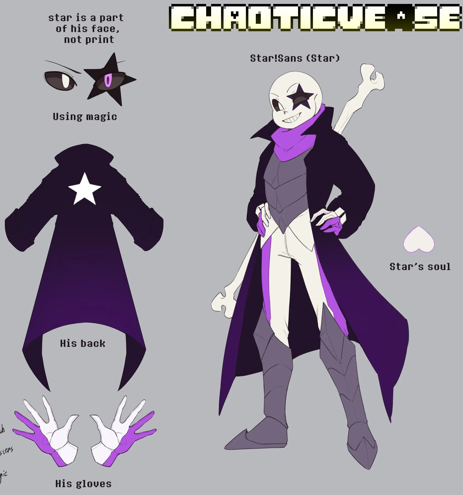
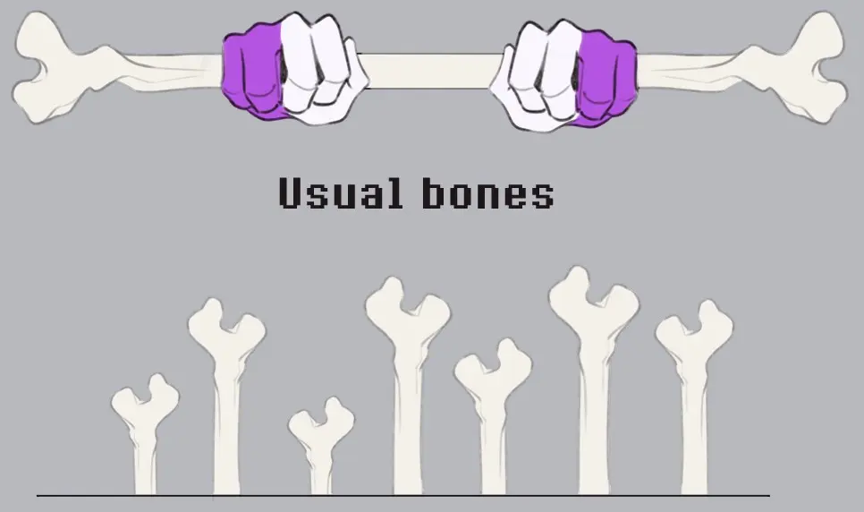
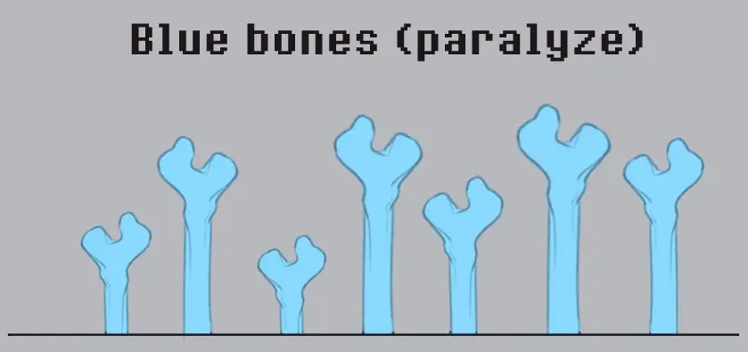
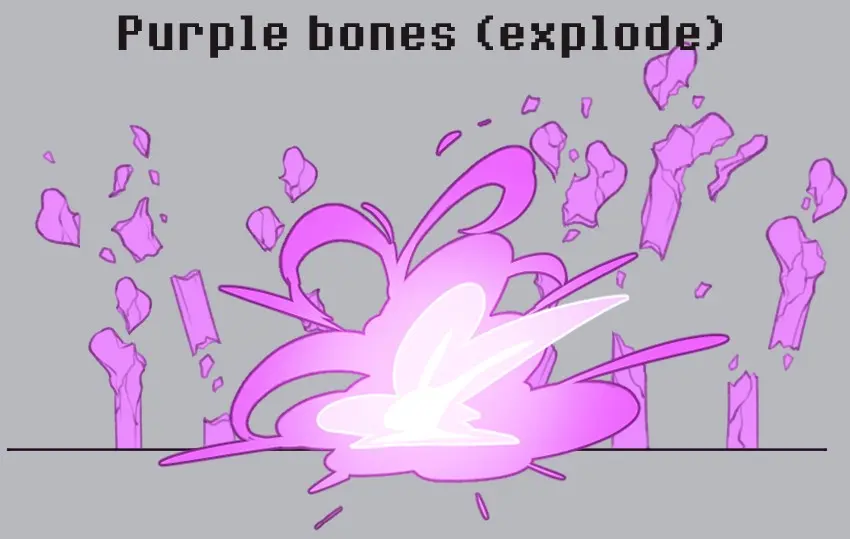
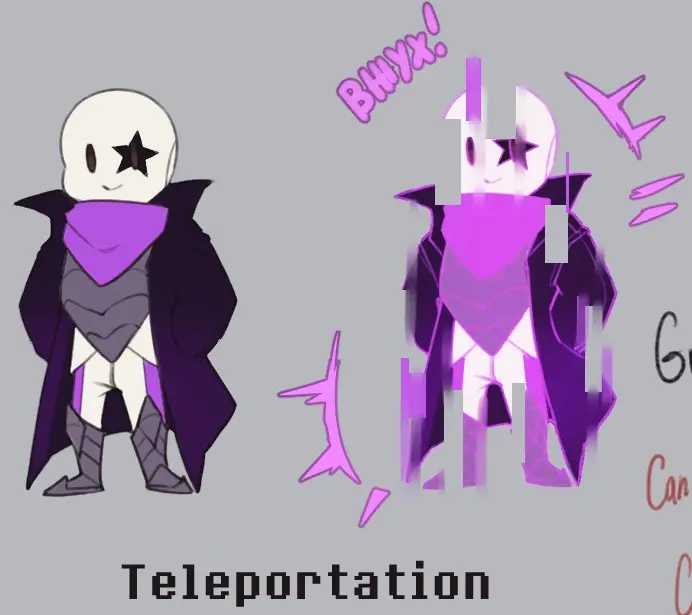

Star!Sans is a member of the royal guard of the multiverse, an excellent warrior—disciplined, fond of a drink, and
always ready to lift the mood with his jokes. A wonderful skeleton you can always rely on, and one who
helps his partner Star!Chara get used to his new life. But even so, no matter how brightly he shines, every light
has its shadow—and he is no exception.
Backstory
Sans was the most ordinary royal guardsman, who, together with Mettaton and the rest of the team, kept the peace of the Underground and awaited a new human.
His universe was neither unique nor special. Just another roleswap universe, where characters swapped roles. That one quirk was seemingly all that set his world slightly apart from the rest.
His universe was meant to remain unnoticed, insignificant. But it was into his world that the one who destroyed his entire life and fate dared to appear — Load Glitch.
Load Glitch’s arrival was sudden, like a wave. Everyone Sans had ever been friends with, everyone he had ever spoken to—all of them faded and died before his eyes.
Sans did not want to stand aside; he wanted to stop this nightmare, but he simply could not defeat someone who had already enslaved dozens of other worlds.
Sans’s universe never stood a chance. And soon Sans himself was on the brink of death. His magic eye had been destroyed, his abilities no longer worked,
and his body was gravely wounded. He was at the edge, yet he kept standing, accepting his fate of his own will. But that was when those known as the guardians of the multiverse arrived. Dozens of warriors whose faces resembled those of the loved ones Sans had lost. Load Glitch and his henchmen
had to retreat, but the damage was colossal. Ninety percent of his world’s population had been killed; his family, friends, and colleagues had fallen. Only he remained, and
a small fraction of those who had managed to hide from the catastrophe. Even Queen Muffet had died. The consequences of Load Glitch’s actions were irreparable, and an
evacuation of the survivors was organized as a matter of urgency. That is how Sans ended up in the Omega Timeline.
After what had happened, Sans was morally shattered and destroyed from within. No medical or psychological help could reach him.
After the emptiness came depression. And after depression, alcoholism. A certain amount of money had been allocated for Sans, but he spent every last bit of it on drink.
Only alcohol dulled all his feelings and helped him drown out the despair.
When he had hit rock bottom, someone appeared who genuinely wanted to help him. His name was Gwin Sans, or simply Gwin.
An extremely energetic and cheerful skeleton in glasses. His bright personality reminded Sans strongly of who he himself used to be, but Sans did not want to see anyone and told Gwin to get lost.
Gwin, however, had no intention of giving up so easily—and since Sans would not get back on his feet the nice way, Gwin had to apply a little of his own strength.
Day after day, Sans trained under Gwin’s direct supervision so that he could not break away and leave. Sans tried
to run from him, but Gwin clung to him like a burr. So Sans had no choice. Days, weeks, months passed that way. In the end, Sans’s mind was finally able to clear and find at least
some harmony, for which Sans is grateful to Gwin. It also helped them become friends.
But most importantly—Sans finally had a tangible goal. Revenge. He could not sit around idly in the Omega Timeline. He had to act. Sans learned of
a mysterious Alphys in a hovering chair, who could heal any injury and grant power for a corresponding price. Of course it sounded dubious, but Sans was in no
position to refuse such an opportunity. Having found her, he asked her for help. Sans had nothing to pay with except becoming her assistant. She thought it over and
agreed. That is how Sans’s skull was restored, and with it came a new magic eye. It was not the same as before, but it had its own unique functions. From that moment on, he began to call himself Star.
After practicing with his new eye, Star began searching for Load Glitch. He was surely hiding somewhere among the worlds of the multiverse—
and whenever news of his appearance came through, Star was the first to head for the place he had shown up.
Time passed, and the number of battles between them grew. Star sank deeper and deeper into his desire to finish Load Glitch off. Even Load’s reckless,
insane attacks became predictable to Star. It seemed that with every fight it was growing harder for Load to stand against Star, and that Star had every chance of putting an end to him.
And when that day came, Load used the most despicable trump card against him.
He directed his attack not at Star, but at the defenseless inhabitants of the AU. Star had no choice but to protect them while Load fled.
Unfortunately, not everyone survived the attack. Star simply physically did not have time to protect them all. That was what made Star realize that his thirst for revenge had clouded his mind—and what
had made him who he was: the desire to protect others and fight for their sake.
From that moment on, Star no longer allows his thirst for revenge to cloud his mind. He began to think more about others and their safety,
and only last of all about revenge on Load. But soon he met a human whose world had likewise been enslaved by Load. And that human wanted with
all his soul to kill Load Glitch. Just as it had been with Star before. The only question is whether he can bring this human to his senses and
show him something besides the path of revenge.
Personality
Star rather strongly resembles classic Sans, but with traits inherent to Undyne. He is not lazy, is brave, has
a competitive and strategic spirit, thinks first and foremost about protecting others, and values life. It is hard to describe him more deeply,
since his current life in the Omega Timeline suits him well enough. His actions describe him better than words.
Of course he misses his home and his family, but he accepted long ago that they are gone and lives on. With new friends, loved ones, and new goals.
And now he has to help Chara see that he, too, can find something new for himself, rather than fixating on revenge.
Appearance

The most distinctive detail of Star is the star on his face. It is not a drawing; it is made of almost the same material as bone,
and is in fact a prosthesis. Star’s body still has a small number of cracks, hidden under his clothes.
Star wears a white shirt, over which he has his chestplate and a black-and-purple coat with a star emblem on the back.
He wears white-and-purple gloves and white pants with purple stripes down the sides. Around his neck is a purple bandana. On his feet are metal boots.
A long bone can often be seen behind his back.
Abilities
Physical Strength
Star’s strength differs from that of most Stars. Because he was a royal guardsman and trained with
Gwin, his body has more substantial strength, agility, and durability than many other Sanses.
Bones

The most standard attack for most Sanses. With it, Star also creates a bone staff for himself. Used for defense, attack, or as platforms.
Blue Bones

The second standard attack for most Sanses. He uses them to immobilize opponents.
Purple Bones

Star’s unique gimmick. Unlike orange bones, which require constant movement,
purple bones work as detonators. They can explode instantly or with a delay of up to
10 seconds, flashing in the process.
Teleportation

It works like most Sanses’ teleportation, except that Star’s teleportation effect is slightly different, due to his magic eye.
Additional Information
- Star currently does not use Gaster Blasters. They are broken.
- Star cannot use blue magic to grab souls.
- Star’s explosive purple bones can harm him as well.
- Star still likes alcohol and drinks it from time to time, but no longer as often as before. He only does so with Gwin, for a good reason.
- Star likes to compete with Gwin in arm wrestling.